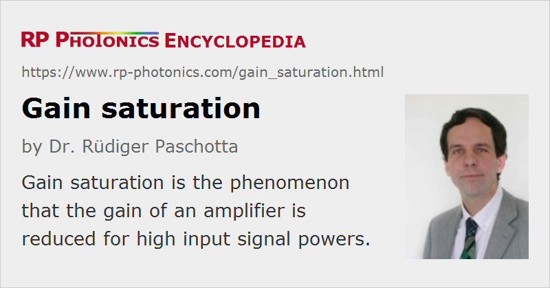

Gain Saturation
Definition: the phenomenon that the gain of an amplifier is reduced for high input signal powers
Alternative term: gain compression
More specific terms: homogeneous saturation, inhomogeneous saturation
German: Verstärkungssättigung
Categories: lasers, optical amplifiers, physical foundations
How to cite the article; suggest additional literature
Author: Dr. Rüdiger Paschotta
An amplifier device such as a laser gain medium cannot maintain a fixed gain for arbitrarily high input powers, because this would require adding arbitrary amounts of power to the amplified signal. Therefore, the gain must be reduced for high input powers; this phenomenon is called gain saturation (or gain compression).
In the case of a laser gain medium, the gain does not instantly adjust to the level according to the optical input power, because the gain medium stores some amount of energy, and the stored energy determines the gain. For example, a sudden increase in the input power of a laser gain medium will reduce the gain only within a certain time, because the population of excited laser ions is only reduced with a certain finite rate. This has important consequences for the laser dynamics.
The general dynamic equation for the gain is
where g is the logarithmic gain coefficient, i.e., the natural logarithm of the ratio of output power to input power; it is assumed to be small. (Otherwise, the optical power would vary substantially within the gain medium.) gss is the small-signal gain (for a given pump intensity), τg the gain relaxation time, P the power of the amplified beam, and Esat the saturation energy of the gain medium. Note that the power amplification factor is exp(g), and must not be confused with g.
Note that this way of treating gain saturation cannot easily be applied to wavelength-dependent gain; that issue is discussed further below.
Gain Saturation in the Steady State
In the steady state (i.e., for long time scales with constant pump power and resonator losses), the gain is
where Psat is the saturation power. Note that it has been implicitly assumed that the pump rate is constant, i.e. there are no effects of pump saturation. This assumption is well justified in most, but not all cases.
For example, the gain is reduced to half the small-signal gain if the signal power equals the saturation power.
Calculations for large gain are more sophisticated, essentially because the optical intensity varies significantly within the amplifier. A straightforward approach is to divide a high-gain amplifier into a sequence of low-gain amplifiers, which can all be treated with the low-gain approximation. However, there are numerically more efficient techniques which do not require such a subdivision.
The transverse variation of optical intensity of a laser beam can modify the saturation characteristics: laser-active ions in the outer parts of the beam require a higher optical power to be saturated. This effect somewhat modifies the saturation curves as shown e.g. in Figures 1 and 2.
The presented equations can also be used for high repetition rate pulse trains with sufficiently low pulse energy. Gain saturation may then be determined only by the average power.
Gain Saturation by an Optical Pulse
For optical amplification of a short pulse (with a duration well below the upper-state lifetime), spontaneous emission during the time of pulse amplification is not important. Also, the influence of pump light can usually be neglected (except for pulsed pumping with high intensity). The gain after the pulse is then reduced by a factor exp(−Ep / Esat), where Ep is the pulse energy. For example, the gain is reduced to 1 / e ≈ 37% of the initial value, if Ep = Esat.
The effective gain as experienced by the pulse is some averaged value, as the gain decreases during pulse amplification. This average gain can be calculated by considering the reduction in the stored energy in the gain medium. In the simpler case, where the gain is small, so that the intensity is approximately constant within the amplifier, the result is
where g0 is the initial gain coefficient. (See the dashed curve in Figure 2.) In the more general case with arbitrarily high gain, one may use the Frantz-Nodvik equation
and obtain
(Note that as in the equations above, g0 and gp are dimensionless gain coefficients, not the gain per unit length.)
Note that an implicit underlying assumption is that there is always a thermal equilibrium within the involved Stark level manifolds. That assumption may be violated for an intense femtosecond pulse. In such cases, the effective amplification and energy extraction may be smaller than estimated with the presented equations.
Figure 3 shows a numerically simulated example where an optical pulse is amplified in a fiber amplifier The shape of the amplified pulse is substantially distorted, since the amplifier gain drops substantially during the pulse due to gain saturation.

Such strong saturation effects are common for cases where one tries to extract much of the stored energy from a high-gain amplifier with a single pulse. Numerical simulations are often needed for analyzing such devices. Note that the saturation conditions can be very different between the input and output ends of the amplifier, and nonlinear effects can additionally complicate the behavior.
Homogeneous and Inhomogeneous Saturation
An important issue is the homogeneous or inhomogeneous nature of gain saturation. Homogeneous gain saturation means that the spectral shape of the gain is not affected by the saturation. This is the case e.g. when all laser-active ions have the same emission spectrum. In some gain media, particularly in disordered media such as glasses, the laser ions can occupy different sites in the lattice, and the differing local electric fields affect the wavelengths and strength of the different transitions. This can lead to inhomogeneous saturation (Figure 4), where the spectral shape changes; typically, the gain around the laser wavelength is saturated more than the gain at other wavelengths.
Another cause of inhomogeneous gain medium can be spatial hole burning in linear laser resonators, caused by the wavelength-dependent standing-wave pattern in the gain medium.
In any case, inhomogeneous gain saturation can make it difficult to achieve single-frequency operation, since non-lasing resonator modes are favored in terms of gain. The homogeneous or inhomogeneous nature of gain saturation also has important effects on the mode-locking behavior and particularly for Q switching and for amplifiers.
Saturation of Wavelength-dependent Gain
Gain saturation is often described with differential equations in the time domain, as explained above. A substantial difficulty is under certain circumstances that both the laser gain and the amplified optical fields have a substantial bandwidth, and those wavelength dependencies should be taken into account. This is particularly the case for the amplification of intense femtosecond pulses, e.g. in chirped-pulse amplifier systems. Various approaches have been applied in order to address that challenge:
- In time-domain differential equations for pulse envelopes, one can take into account the frequency dependence of the laser gain in the form of temporal derivatives; for example, a parabolic spectral gain shape would be described with a second-order time derivative. At the same time, gain saturation can be described based on the time-integrated optical power [1]. That approach, however, ignores the effect of the frequency dependence of the optical fields on the saturation. It is therefore not appropriate in cases where the pulse bandwidth is not small compared with the gain bandwidth.
- A completely different approach is to describe ultrashort pulses with time–frequency distributions [2]. Numerically, one uses two-dimensional grids involving both the time and frequency dimension; that allows the simultaneous treatment of time and frequency dependence in a way is developed in the context of radiative transfer theory. The weakness of that approach is that coherent effects, which are often important in the context of ultrashort pulses (e.g. related to limitations of the time–bandwidth product), are ignored. That is acceptable in some cases, but problematic e.g. for an all-purpose simulation software.
- Models have been developed where short sections of strongly chirped pulses are considered as quasi-monochromatic, so that simple rate equations can be applied [3]. That approach can give a reasonable accuracy but requires quite specific assumptions on the amplified pulse; it is therefore not well applicable to a general simulation software, for example.
- Another possibility is to use Maxwell–Bloch equations. That allows one to include the full microscopic dynamics of the gain medium. However, this approach is usually not practical for application to solid-state laser amplifiers, where a huge number of laser-active ions with microscopically different properties are interacting with a laser pulse.
- Ref. [4] describes a method where essentially a pulse is divided into multiple temporal sections, but without requiring specific assumptions on the details of the amplified pulse. Numerical artifacts are avoided by using a “soft” slicing algorithm based on a smooth window function. For each slice, a Fourier transform into the frequency domain is used in order to take into account the frequency dependence of the gain, and the numerical accuracy is good as long as the saturation caused by a single slice is relatively weak. Although the slices cannot be made arbitrarily short, because otherwise one would lose the required frequency resolution, the method is practical in a wide range of cases, for example for CPA-type fiber amplifiers. The algorithm is used in the RP Fiber Power software.
Saturation Characteristics of Different Gain Media
Different kinds of gain media differ very much in their gain saturation characteristics:
- Solid-state gain media based on ion-doped crystals or glasses typically operate on so-called weakly allowed transitions, leading to small laser cross sections, large saturation fluence and intensity, and long upper-state lifetime (microseconds to milliseconds). Such lasers are suitable for Q switching but also have a tendency for spiking behavior. For passive mode locking, they tend to exhibit Q-switching instabilities.
- Semiconductors and laser dyes exhibit a small saturation fluence and intensity, in addition to a short upper-state lifetime of typically a few nanoseconds. They are thus not suitable for Q switching, but for passive mode locking without Q-switching instabilities, and they react very quickly to changes in the pump power. The latter has implications on the intensity noise.
- Optical parametric amplifiers instantaneously adapt the gain to the amplified signal power level, since they do not store energy in the gain medium.
Questions and Comments from Users
Here you can submit questions and comments. As far as they get accepted by the author, they will appear above this paragraph together with the author’s answer. The author will decide on acceptance based on certain criteria. Essentially, the issue must be of sufficiently broad interest.
Please do not enter personal data here; we would otherwise delete it soon. (See also our privacy declaration.) If you wish to receive personal feedback or consultancy from the author, please contact him e.g. via e-mail.
By submitting the information, you give your consent to the potential publication of your inputs on our website according to our rules. (If you later retract your consent, we will delete those inputs.) As your inputs are first reviewed by the author, they may be published with some delay.
Bibliography
| [1] | G. P. Agrawal, “Effect of gain dispersion on ultrashort pulse amplification in semiconductor laser amplifiers”, IEEE J. Quantum Electron. 27 (6), 1843 (1991), doi:10.1109/3.90014 |
| [2] | E. Yahel, O. Hess, and A. A. Hardy, “Ultrashort-pulse high-power Yb3+-doped fiber amplifiers”, IEEE J. Quantum Electron. 43 (9), 824 (2007), doi:10.1109/JQE.2007.902390 |
| [3] | D. N. Schimpf, J. Limpert, and A. Tünnermann, “Optimization of high performance ultrafast fiber laser systems to 10 GW peak power”, J. Opt. Soc. Am. B 27 (10), 2051 (2010), doi:10.1364/JOSAB.27.002051 |
| [4] | R. Paschotta, “Modeling of ultrashort pulse amplification with gain saturation”, Opt. Express 25 (16), 19112 (2017), doi:10.1364/OE.25.019112 |
See also: saturable absorbers, laser dynamics, inhomogeneous saturation, spatial hole burning
and other articles in the categories lasers, optical amplifiers, physical foundations
|  |
If you like this page, please share the link with your friends and colleagues, e.g. via social media:
These sharing buttons are implemented in a privacy-friendly way!